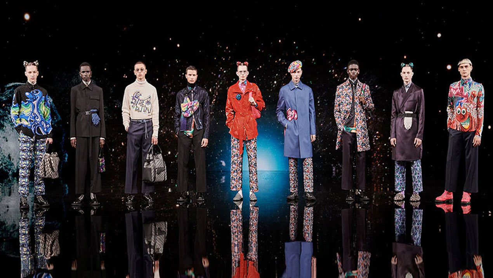
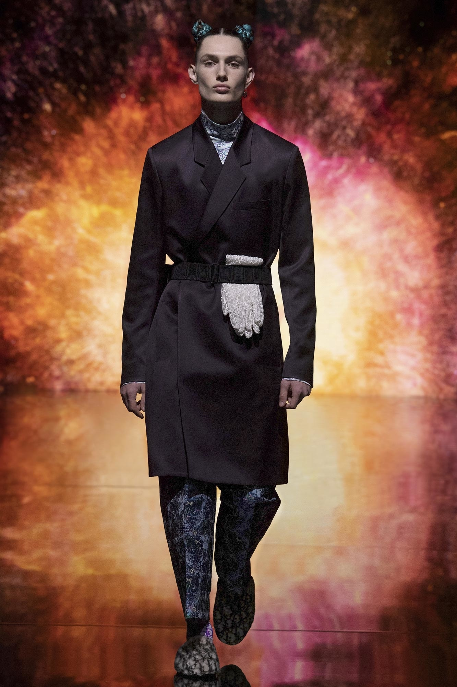

FALL
2021
COLLECTION
극적인 컬러와 극적인 현실. 헤리티지와 테크놀로지 간의 대화를 이끌며, 가상과 현실의 교차점을 탐색합니다.
2021 가을 컬렉션에서 Dior Men의 아티스틱 디렉터 킴 존스는 전통과 디지털 혁신의 융합을 선보입니다.
이러한 철학은 전 세계 사람들이 경험할 수 있도록 100% 가상으로 진행되는 컬렉션 패션쇼뿐만 아니라 그의 디자인 자체에서도 고스란히 드러납니다.
이번 컬렉션은 21세기 디올 꾸뛰르 하우스가 이룩한 진화, 즉 오늘날 패션의 현실과 역사의 꿈, 내일을 향한 낙천적 희망의 공존을 보여줍니다.
세계 곳곳의 현대 미술 작가들과 파트너를 맺는 Dior의 새로운 전통에 따라 킴 존스는 미국 아티스트 케니 샤프*와 콜라보레이션을 진행습니다. 팝 문화와 공상 과학을 테마로 한 그만의 독특한 미학으로 케니 샤프는 미래를 그리면서 동시에 역사적인 예술 사조를 떠올리는 만화적인 작품을 만들어 왔습니다. Dior 아뜰리에에서 케니 샤프의 작품은 프린트와 자수로 탈바꿈하며, 이전 작품들과 더불어 Dior 2021 가을 남성 컬렉션을 위해 특별히 새롭게 탄생한 십이지 동물을 담은 그림을 선보입니다. 디올 하우스의 홀마크인 테일러링이 기초가 되어 고급스러운 스타일의 격조 높은 분위기를 한층 강조합니다. 테일러 코트와 슬렌더 싱글 브레스트 재킷과 같은 Tailleur Oblique는 몸을 여유롭게 감싸주며, 바 재킷에서 영감을 받은 웨이스트 벨트가 돋보입니다. 이는 New Look과 Dior 핵심 아이콘의 진화를 나타냅니다. 크리스챤 디올의 디자인에 영향을 주었던 원천이자 수 세기 동안 창의성과 공예의 중심지 역할을 해 온 중국에서 이번 컬렉션의 영감을 받았습니다. 전통적인 중국의 기술과 소재를 프랑스 꾸뛰르 하우스의 작풍에 녹아내며 예술성의 세계적인 면모를 강조했습니다. 윤 안은 제이드와 라피스로 모던한 주얼리를 완성하고, 메종 르마리에는 국화꽃을 부토니에로 재해석했습니다. 스티븐 존스의 탬버린 스타일 베레모도 컬렉션 룩을 장식했습니다. 프랑스의 꾸뛰르 하우스, 미국의 아티스트, 중국의 우수한 장인 정신이 한곳에 어우러진 Dior에는 어떠한 경계선도 존재하지 않습니다. 킴 존스와 케니 샤프의 매혹적인 예술적 콜라보레이션을 기록한 독점 영상을 통해 이번 컬렉션이 공개됩니다. 현재 이례적인 세계적 상황 속에서 시공간에 대한 인지의 변화를 탐구하는 유례없는 작품입니다. *파트너십은 유명 아티스트, 포토그래퍼, 디자이너, 창작가들이 소속된 글로벌 라이센싱 에이전시이자 크리에이티브 자문 회사인 Artestar와 함께 진행되었습니다.

대담하게, 미래로. Dior 2021 가을 남성 컬렉션의 가상 패션쇼는 프랑스 토마 반즈 감독의 환상적인 공간 연출과 함께 생동감 넘치는 시공간 속 우주적 여정으로 보는 이를 안내합니다.
지금 2021 Fall Men`s Show를
확인해보세요.
LOOKS
